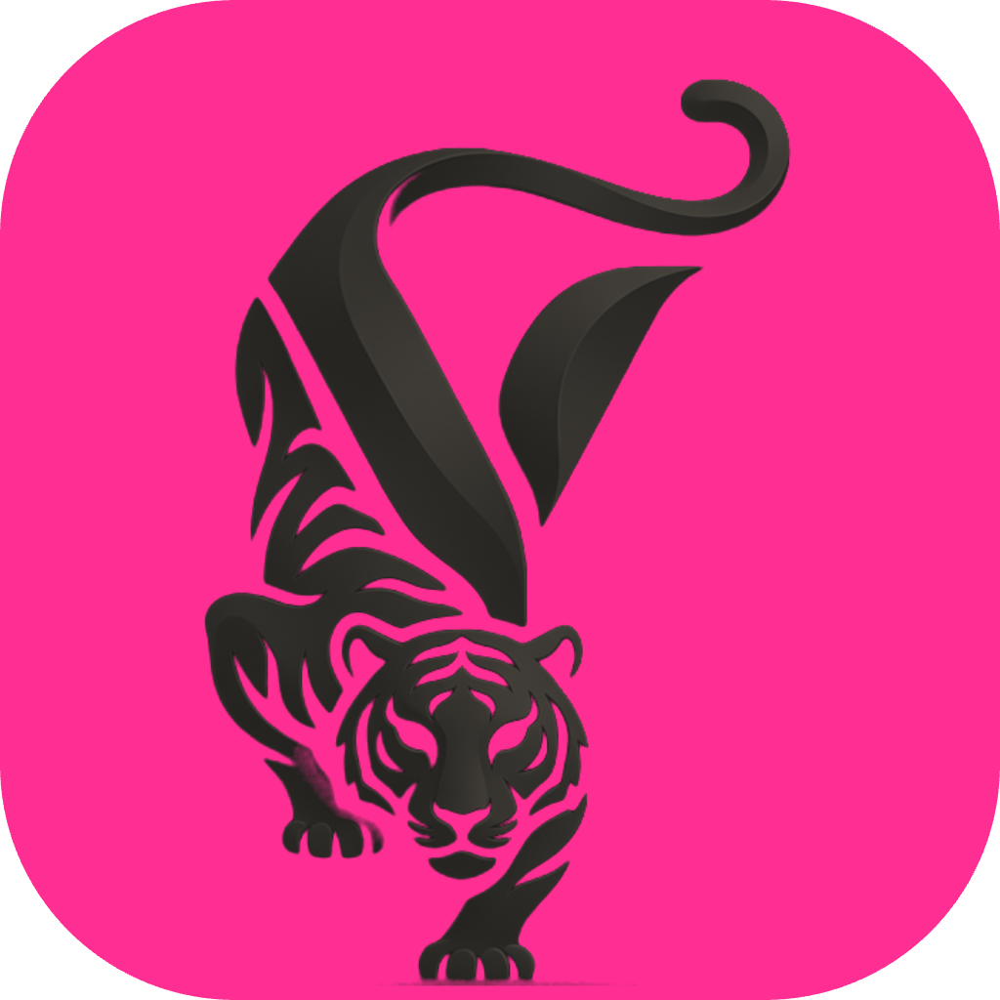

Your generated tiger, knocked off the navy and remapped to the brand. The lone eye glyph is gone. Three colour fields below — all 1024px, squircle-masked, ready for the App Store.

Ink tiger on #FF2E93. Loudest on a home screen. The stripes start to fill in below ~60px.
Pink tiger on #1A1A18. Holds its shape smallest, and the pink reads as a signal rather than a shout.
Ink tiger on #F7F5F0. Matches the app's light mode exactly. Weakest at small sizes — it disappears on a white wallpaper.
Mark left, stacked wordmark right. For headers, letterhead, the top of a PDF.
Mark over a single line. Splash screen, shirt, sticker.
assets/logo/
One caveat: these are raster, recoloured from a JPEG — the edges carry a little softness from the original render and the stripes have a gradient baked in. Good enough for the app, a deck, and the App Store listing. Before anything printed or embroidered, get the tiger traced to vector and flatten the gradient to one flat pink.